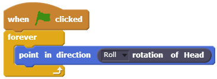
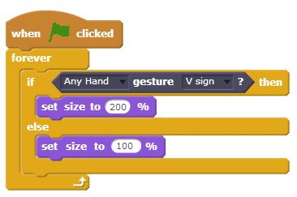

Get more from Intel® RealSense™
Showcase ›
Welcome Scratchers
Intel® RealSense™ Extension for Scratch introduces new and amazing capabilities - all made simple with just a few Scratch blocks
Scratch is a project of the Lifelong Kindergarten group of the MIT Media Lab. Learn more
Hands tracking. Gesture recognition. Face tracking. Face expressions. Voice commands.
Setting Up
Get a Camera
Make sure you have an Intel® RealSense™ F200 camera
Go to ScratchX
Open the extension in ScratchX
1
3
 Privacy Notice: Even though Intel® RealSense™ Extension for Scratch uses a camera, no images are captured, stored or sent to the cloud.
Privacy Notice: Even though Intel® RealSense™ Extension for Scratch uses a camera, no images are captured, stored or sent to the cloud.
Everything you need to know
Try out different capabilities by switching the green flag between the blocks
Simple Face
Track the major landmarks of the face
Rock Paper Scissors
An intermediate level hand gestures game
Simple Hand
Shows a hand skeleton that tracks the major joints of the hand
Full Face
Track the entire set of face landmarks
Samples
Scratch Blocks
Face
Returns true if face is visible
Returns the position of the selected face landmark in selected axis
Returns true if the selected face expression is detected
Returns the rotation of the head between 0 to 180
Hands
Returns true if the selected hand is visible
Returns the position of the selected joint in selected hand in selected axis
Returns true if the selected gesture is detected on selected hand
Returns the foldedness amount of the selected finger of selected hand
If you are new to Scratch, you might want to check out this link first
Getting Started With Scratch ›
Tracking the index finger
 Choose Cat1 from the Sprite library
Choose Cat1 from the Sprite library- Drag the green flag block and connect a forever block under it
- From Motion, drag set x to and set y to blocks under the forever block
- Go to More Blocks and drag a hand position block into each set block
- Set the position axis of each hand hand position block to the corresponding axis of the set block
- Make sure both hand position blocks are following the same hand and same joint
- Press the green flag
- Present your hand to the camera, palm facing forward, fingers facing upwards, and move your hand around, the cat should be following your hand
Rotating with the head
- Choose Cat1 from the Sprite library
- Drag the green flag block and connect a forever block under it
- From Motion, drag Point in direction block under the forever block
- Go to More Blocks and drag the rotation of head block
- Set the rotation axis to Roll
- Press the green flag
- Tilt your head left and right in front of the camera to see the cat rotate accordingly
Change the size with a V Sign gesture
- Choose Cat1 from the Sprite library
- Drag the green flag block and connect a forever block under it
- From Control, drag an if/else block under the forever block
- Go to More Blocks and drag the gesture block as the condition of the if
- Go to looks and drag a set size to blocks under the if and the else
- Set the set size block under if to 200%, keep the other one at 100%
- Press the green flag
- Present your hand to the camera and make a "V sign" with your index and middle fingers. the cat should change size when you perform the gesture, and get back to it's original size when you open your palm
Getting Started
User Experience (UX)
Making the most out of Intel® RealSense™ Technology
Like any other technology, Intel® RealSense™ has it's sweet spots and it's limitations.
The 3D camera has a range and a field of view. When developing an application, you need to be aware of these, among other things.
To see how to get the most out of Intel® RealSense™ Technology, Check out our UX design guide:
Intel® RealSense™ User Experience Guide ›
Intel Corporation ©